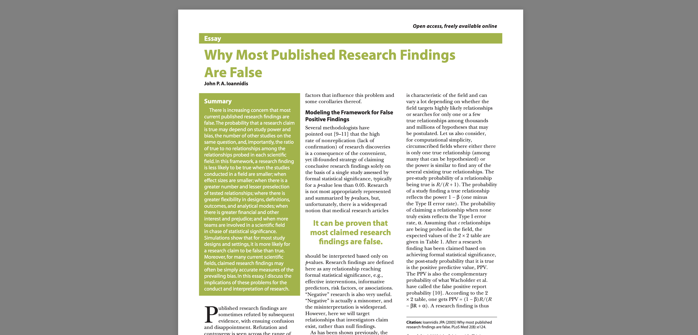
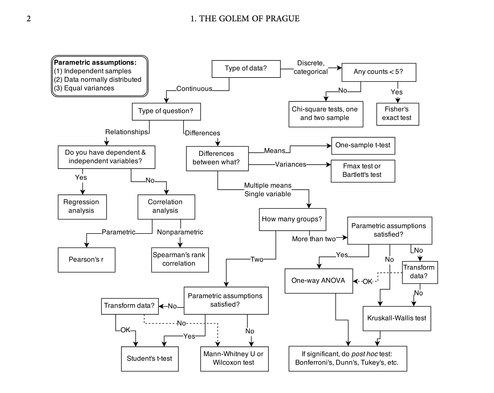

A Fresh Start
The Open Institute For Social Science

https://journals.plos.org/plosmedicine/article?id=10.1371/journal.pmed.0020124A result is statistically significant if, assuming the null hypothesis is true and the model assumptions hold, the probability of obtaining data at least as extreme as those observed (the p-value) is less than or equal to the chosen significance level α. This leads to rejection of the null hypothesis while controlling the long-run Type I error rate at α. (ChatGPT, 2026)
So what is probability? It’s just a way of talking about uncertainty.
Two conventions:
In 2025, Kathmandu saw rain on 179 days:
We can do better with conditional probabilities:
In Nepal, HIV has a prevalence of about 0.1%. We can write that as:
With statistical tests and predictions, we talk about two kinds of “accuracy”:
We can write these using our probability language:
What about P( HIV+ | test+): 3.2%
| (pop: 100,000) | Test+ | Test– |
|---|---|---|
| HIV+ (0.1% = 100) |
P( Test+ | HIV+ ): 99% Sensitivity (True Positive) (99) |
P( Test– | HIV+ ): 1% Type II Error (False Negative) (1) |
| HIV– (99.9% = 99,900) |
P( Test+ | HIV– ): 3% Type I Error (False Positive) (2,997) |
P( Test– | HIV– ): 97% Specificity (True Negative) (96,903) |
Paradox: P(A|B) is not the same as P(B|A)
#| '!! shinylive warning !!': |
#| shinylive does not work in self-contained HTML documents.
#| Please set `embed-resources: false` in your metadata.
#| standalone: true
# app.R
library(shiny)
library(bslib)
library(networkD3)
library(tibble)
library(munsell) # https://github.com/r-wasm/webr/issues/537
sankeyHeight <- 600
sankeyWidth <- 1000
ui <- page_sidebar(
tags$style(HTML(
"
p, ul { font-size: 90%; }
#sankeyWrap svg,
#sankeyWrap svg * {
filter: none !important;
box-shadow: none !important;
}
.sankey-tooltip {
position: absolute;
pointer-events: none;
z-index: 99999;
opacity: 0;
transition: opacity 80ms linear;
padding: 8px 10px;
border-radius: 6px;
background: rgba(20, 20, 20, 0.92);
color: #fff;
font-size: 12px;
line-height: 1.25;
box-shadow: 0 8px 24px rgba(0,0,0,0.25);
max-width: 280px;
}
.sankey-tooltip .label {
font-weight: 600;
margin-bottom: 2px;
}
.sankey-tooltip .value {
opacity: 0.9;
}
"
)),
sidebar = sidebar(
open = "always",
width = 400,
tags$h2("The Base Rate Paradox"),
p(
"Statistical tests help us evaluate the accuracy of prediction models. We often use tests to identify individuals with certain conditions or characteristics prevalent in our population."
),
tags$div(
tags$div(
"Rate of Prevalence: P( condition+ )",
style = "font-weight: bold;"
),
tags$p(
"Probability that a randomly selected individual has the condition.",
style = "font-style: italic;"
),
sliderInput(
inputId = "prevalence_pct",
label = NULL,
min = 0,
max = 10,
value = 0.1,
step = 0.1,
post = "%"
)
),
tags$hr(style = "margin: 1px 0"),
tags$div(
tags$p(
"Statistical tests are always imperfect. Their accuracy is usually summarized by two conditional rates:"
),
tags$div(
"Sensitivity: P( test+ | condition+ )",
style = "font-weight: bold;"
),
tags$p(
"Probability of a positive test among those with the condition (true positive rate)",
style = "font-style: italic;"
),
sliderInput(
inputId = "sensitivity_pct",
label = NULL,
min = 0,
max = 100,
value = 99,
step = 1,
post = "%"
),
tags$div(
"Specificity: P( test– | condition– )",
style = "font-weight: bold;"
),
tags$p(
"Probability of a negative test among those without the condition (true negative rate)",
style = "font-style: italic;"
),
sliderInput(
inputId = "specificity_pct",
label = NULL,
min = 0,
max = 100,
value = 97,
step = 1,
post = "%"
)
)
),
mainPanel(
width = 12,
tags$p(
"Sensitivity and specificity are important, but they can be misleading. They don't tell the whole story.",
tags$br(),
"Often, the kind of accuracy we are actually interested in understanding has the opposite conditional dependency."
),
tags$div(
tags$div(
tags$div(
"Positive Predictive Value: P( condition+ | test+ )",
style = "font-weight: bold;"
),
tags$p(
"Probability of a condition among those with a positive test",
style = "font-style: italic; margin-bottom: 0;"
)
),
tags$div(
textOutput("ppv_text"),
style = "font-size: 200%; font-weight: bold;"
),
style = "display: flex; gap: 40px; align-items: end;"
),
tags$hr(),
sankeyNetworkOutput(
"sankey",
width = paste0(sankeyWidth, "px"),
height = paste0(sankeyHeight, "px")
)
)
)
server <- function(input, output, session) {
ppv_reactive <- reactive({
prevalence <- input$prevalence_pct / 100
sensitivity <- input$sensitivity_pct / 100
specificity <- input$specificity_pct / 100
tp <- prevalence * sensitivity
fp <- (1 - prevalence) * (1 - specificity)
if ((tp + fp) == 0) NA_real_ else tp / (tp + fp)
})
nodes_reactive <- reactive({
tibble(
id = 0:6,
name = c(
"Population",
"Condition Present",
"Condition Absent",
"True Positive",
"False Positive",
"True Negative",
"False Negative"
),
group = c(
"population",
"present",
"absent",
"true",
"false",
"true",
"false"
)
) |>
as.data.frame()
})
links_reactive <- reactive({
population <- 100000
prevalence <- as.numeric(input$prevalence_pct) / 100
sensitivity <- as.numeric(input$sensitivity_pct) / 100
specificity <- as.numeric(input$specificity_pct) / 100
links <- tribble(
~source , ~target , ~value , ~title ,
0 , 1 , population * prevalence , "Condition Present" ,
0 , 2 , population * (1 - prevalence) , "Condition Absent" ,
2 , 5 , population * (1 - prevalence) * specificity , "True Negative" ,
1 , 6 , population * prevalence * (1 - sensitivity) , "False Negative" ,
1 , 3 , population * prevalence * sensitivity , "True Positive" ,
2 , 4 , population * (1 - prevalence) * (1 - specificity) , "False Positive"
) |>
as.data.frame()
# LinkGroup: inherit the source node's group -> links match/blend with node colors
node_groups <- nodes_reactive()$group
links$group <- node_groups[links$source + 1]
links
})
output$ppv_text <- renderText({
ppv <- ppv_reactive()
if (is.na(ppv)) "Undefined" else sprintf("%.2f%%", 100 * ppv)
})
output$sankey <- renderSankeyNetwork({
sankeyNetwork(
Links = links_reactive(),
Nodes = nodes_reactive(),
Source = "source",
Target = "target",
Value = "value",
NodeID = "name",
NodeGroup = "group",
# ---- link colors: CRAN networkD3 supports LinkGroup (not linkColourMode) ----
LinkGroup = "group",
fontSize = 14,
nodeWidth = 30,
iterations = 0,
margin = list(top = 5, right = 0, bottom = 5, left = 5),
sinksRight = TRUE,
# Use semi-transparent RGBA so links blend nicely with nodes
# (Nodes remain effectively opaque because they're solid rect fills)
colourScale = JS(
'd3.scaleOrdinal()
.domain(["population", "absent", "present", "true", "false"])
.range([
"#2f6088ff", // population
"#a5c5e2ff", // absent
"#468ec9ff", // present (slightly stronger)
"#3E5915", // true
"#A60F37" // false
])'
),
height = sankeyHeight,
width = sankeyWidth
) |>
htmlwidgets::onRender(
"
function(el) {
// remove native SVG tooltips
d3.select(el).selectAll('title').remove();
var fmt = d3.format(',.0f');
// tooltip div (one per widget)
var tipId = 'sankey-tooltip-' + el.id;
d3.select('body').select('#' + tipId).remove();
var tip = d3.select('body')
.append('div')
.attr('id', tipId)
.attr('class', 'sankey-tooltip')
.style('position', 'absolute')
.style('pointer-events', 'none')
.style('z-index', 99999)
.style('opacity', 0)
.style('padding', '8px 10px')
.style('border-radius', '6px')
.style('background', 'rgba(20,20,20,0.92)')
.style('color', '#fff')
.style('font-size', '12px')
.style('line-height', '1.25')
.style('box-shadow', '0 8px 24px rgba(0,0,0,0.25)');
function moveTip() {
var e = d3.event;
tip.style('left', (e.pageX + 12) + 'px')
.style('top', (e.pageY + 12) + 'px');
}
function showTip(label, value) {
tip.html(
'<div style=\"font-weight:600;\">' + label + '</div>' +
'<div>' + fmt(value) + '</div>'
).style('opacity', 1);
moveTip();
}
function hideTip() {
tip.style('opacity', 0);
}
// LINKS: Source -> Target + value
d3.select(el).selectAll('path.link')
.style('stroke-opacity', 0.55) // optional: strengthen link visibility
.on('mouseover.tooltip', function(d) {
showTip(d.source.name + ' \\u2192 ' + d.target.name, d.value);
})
.on('mousemove.tooltip', moveTip)
.on('mouseout.tooltip', hideTip);
// NODES: Name + value
d3.select(el).selectAll('.node rect')
.on('mouseover.tooltip', function(d) {
showTip(d.name, d.value);
})
.on('mousemove.tooltip', moveTip)
.on('mouseout.tooltip', hideTip);
}
"
)
})
}
shinyApp(ui, server)Paradox: P(A|B) is not the same as P(B|A)
| Sociology | Economics | ||
|---|---|---|---|
| Urban | 240 | 300 | 540 |
| Rural | 80 | 20 | 100 |
| 320 | 320 |
P( Sociology | Rural ) = 80 / 100 = 0.80
P( Rural | Sociology ) = 80 / 320 = 0.25
Let’s look at that quote again:
A result is statistically significant if, assuming the null hypothesis is true and the model assumptions hold, the probability of obtaining data at least as extreme as those observed (the p-value) is less than or equal to the chosen significance level α. This leads to rejection of the null hypothesis while controlling the long-run Type I error rate at α.
Two key phrases:
This frames statistical significance as:
What we usually actually want:

Statistical Rethinking, p.2 (Richard McElreath, 2020)
#| '!! shinylive warning !!': |
#| shinylive does not work in self-contained HTML documents.
#| Please set `embed-resources: false` in your metadata.
#| standalone: true
library(shiny)
library(bslib)
library(shinyjs)
library(ggplot2)
library(ggiraph)
library(htmlwidgets)
library(uuid)
library(munsell) # https://github.com/r-wasm/webr/issues/537
TOTAL_STONES <- 9L
CONJECTURE <- vapply(
0:TOTAL_STONES,
function(x) paste0(strrep("🔵", x), strrep("⚫️", TOTAL_STONES - x)),
character(1)
)
SHIFT_HANDLER <- HTML(
"
document.addEventListener('keydown', function(e) {
if (e.key === 'Shift') {
const btn = document.getElementById('drawRandom');
if (btn) btn.innerText = 'Random × 10';
}
});
document.addEventListener('keyup', function(e) {
if (e.key === 'Shift') {
const btn = document.getElementById('drawRandom');
if (btn) btn.innerText = 'Random';
}
});
"
)
STYLE <- HTML(
"
h1 { margin-bottom: 0; }
p { font-size: 90%; }
/* Prevent table from graying out during recalculation */
#resultTable.recalculating { opacity: 1 !important; }
#resultTable.shiny-output-error,
#resultTable.shiny-output-error-validation { color: inherit; }
/* Shiny adds .shiny-recalculating to the output element while updating */
#resultTable.shiny-recalculating { opacity: 1 !important; }
#resultTable.shiny-recalculating:before { display: none !important; }
#resultTable table {
width: 100%;
table-layout: fixed;
}
#resultTable th:nth-child(1),
#resultTable td:nth-child(1) { width: 220px; }
#resultTable th:nth-child(3),
#resultTable td:nth-child(3) { width: 160px; direction: rtl }
#resultTable th:nth-child(4),
#resultTable td:nth-child(4) { width: 80px; }
/* --- Stop Shiny from dimming the table while recalculating --- */
/* Shiny uses .recalculating (not always .shiny-recalculating) */
#resultTable.recalculating,
#resultTable.shiny-recalculating {
opacity: 1 !important;
}
/* If opacity is applied in a way that affects children, force children too */
#resultTable.recalculating *,
#resultTable.shiny-recalculating * {
opacity: 1 !important;
}s
/* Shiny adds a spinner/overlay via pseudo-elements */
#resultTable.recalculating:before,
#resultTable.recalculating:after,
#resultTable.shiny-recalculating:before,
#resultTable.shiny-recalculating:after {
display: none !important;
content: none !important;
}
/* ---- full-height main panel + plot fills remaining space ---- */
html, body { height: 100%; }
.bslib-page-sidebar { height: 100vh; }
.bslib-page-sidebar .main {
height: 100%;
display: flex;
flex-direction: column;
min-height: 0;
}
#probabilityPlot_wrap {
flex: 1 1 auto;
min-height: 0;
width: 100%;
}
/* Ensure the htmlwidget + ggiraph wrappers and SVG fill the wrapper */
#probabilityPlot_wrap .html-widget,
#probabilityPlot_wrap .girafe_container,
#probabilityPlot_wrap svg {
width: 100% !important;
height: 100% !important;
}
"
)
format2 <- function(x, max_digits = 40L) {
x_chr_fixed <- format(
x,
scientific = FALSE,
trim = TRUE,
digits = 22
)
digit_count <- nchar(gsub("[^0-9]", "", x_chr_fixed))
ifelse(
is.na(x),
NA_character_,
ifelse(
digit_count > max_digits,
format(x, scientific = TRUE, trim = TRUE),
x_chr_fixed
)
)
}
format_probability <- function(x) {
if (is.na(x) || !is.finite(x)) {
return("")
}
if (x > 0 && x < 0.01) {
return("<0.01")
}
if (x < 1 && x > 0.995) {
return(">0.99")
}
sprintf("%.2f", x)
}
ui <- page_sidebar(
tags$script(SHIFT_HANDLER),
tags$style(STYLE),
shinyjs::useShinyjs(),
sidebar = sidebar(
open = "always",
width = 400,
h2("Bayesian Updating"),
p(
"Imagine you have a bag of 9 stones. Each stone is either blue or black, but you don't know how many of each color you have."
),
p(
"You can draw stones from the bag one at a time, noting down its color and then placing it back in the bag. The more you repeat this process, the more you can infer about the contents of the bag."
),
p(
"This graph represents a",
tags$b("probability distribution", .noWS = c("after")),
". From limited observations, we can never be absolutely certain of the contents of the bag, but we can say that some possibilities are more likely than others."
),
div(
id = "bagContents_wrap",
selectizeInput(
"bagContents",
"Contents of the bag:",
choices = c(
"Hidden" = "hidden",
"⚫️⚫️⚫️⚫️⚫️⚫️⚫️⚫️⚫️" = 0,
"🔵⚫️⚫️⚫️⚫️⚫️⚫️⚫️⚫️" = 1,
"🔵🔵⚫️⚫️⚫️⚫️⚫️⚫️⚫️" = 2,
"🔵🔵🔵⚫️⚫️⚫️⚫️⚫️⚫️" = 3,
"🔵🔵🔵🔵⚫️⚫️⚫️⚫️⚫️" = 4,
"🔵🔵🔵🔵🔵⚫️⚫️⚫️⚫️" = 5,
"🔵🔵🔵🔵🔵🔵⚫️⚫️⚫️" = 6,
"🔵🔵🔵🔵🔵🔵🔵⚫️⚫️" = 7,
"🔵🔵🔵🔵🔵🔵🔵🔵⚫️" = 8,
"🔵🔵🔵🔵🔵🔵🔵🔵🔵" = 9
)
)
),
div("Draw a stone:"),
div(
style = "display: flex; gap: 10px;",
actionButton("drawWhite", "⚫️"),
actionButton("drawBlue", "🔵"),
actionButton(
"drawRandom",
"Random",
style = "flex: 1;",
onclick = "
Shiny.setInputValue(
'drawRandom_n',
event.shiftKey ? 10 : 1,
{priority: 'event'}
);
"
)
),
actionButton("reset", "Reset", class = "btn-danger")
),
mainPanel(
width = 12,
uiOutput("dynamicHeader"),
tableOutput("resultTable"),
div(
id = "probabilityPlot_wrap",
ggiraph::girafeOutput("probabilityPlot")
)
)
)
server <- function(input, output, session) {
bag_blue <- reactiveVal(NULL)
draws <- reactiveVal(character())
lik_hist <- reactiveVal(list())
max_hist <- 10L
observeEvent(
input$bagContents,
{
if (input$bagContents == "hidden") {
bag_blue(sample(0:TOTAL_STONES, 1))
} else {
bag_blue(as.integer(input$bagContents))
}
},
ignoreInit = FALSE
)
observeEvent(input$drawBlue, draws(c(draws(), "🔵")))
observeEvent(input$drawWhite, draws(c(draws(), "⚫️")))
observeEvent(
input$drawRandom_n,
{
req(!is.null(bag_blue()))
n_draws <- as.integer(input$drawRandom_n)
pool <- c(rep("🔵", bag_blue()), rep("⚫️", TOTAL_STONES - bag_blue()))
draws(c(draws(), sample(pool, n_draws, replace = TRUE)))
},
ignoreInit = TRUE
)
observeEvent(input$reset, {
draws(character())
lik_hist(list())
# bag_blue(sample(0:TOTAL_STONES, 1))
updateSelectizeInput(session, "bagContents", selected = "hidden")
})
observe({
has_draws <- length(draws()) > 0
if (has_draws) {
shinyjs::disable("bagContents")
shinyjs::enable("reset")
} else {
shinyjs::enable("bagContents")
shinyjs::disable("reset")
}
})
observe({
req(!is.null(bag_blue()))
tip <- sprintf("blue stones = %d (out of %d)", bag_blue(), TOTAL_STONES)
shinyjs::runjs(sprintf(
"$('#bagContents_wrap .selectize-control').attr('title', %s);",
shQuote(tip)
))
})
table_state <- reactive({
d <- draws()
n <- length(d)
header <- if (n == 0) {
"Draw Results"
} else if (n <= 20) {
paste(d, collapse = "\u00A0")
} else {
tbl <- sort(table(d), decreasing = TRUE)
labels <- paste(names(tbl), "×", as.integer(tbl))
paste(labels, collapse = ", ")
}
if (n == 0) {
df <- data.frame(
conjecture = CONJECTURE,
possibilities = "-",
total = "-",
probability = rep(1 / (TOTAL_STONES + 1), TOTAL_STONES + 1),
stringsAsFactors = FALSE
)
return(list(df = df, header = header))
}
factors <- lapply(
0:TOTAL_STONES,
function(bx) ifelse(d == "🔵", bx, TOTAL_STONES - bx)
)
formula <- vapply(
factors,
function(f) {
if (n <= 20) {
paste0(f, collapse = " × ")
} else {
tbl <- sort(table(f), decreasing = TRUE)
labels <- paste0(names(tbl), "<sup>", as.integer(tbl), "</sup>")
paste(labels, collapse = " × ")
}
},
character(1)
)
log_paths <- vapply(factors, function(f) sum(log(f)), numeric(1))
m <- max(log_paths)
paths_scaled <- exp(log_paths - m)
probability <- paths_scaled / sum(paths_scaled)
paths <- vapply(factors, prod, numeric(1))
df <- data.frame(
conjecture = CONJECTURE,
possibilities = formula,
total = format2(round(paths, 0)),
probability = probability,
stringsAsFactors = FALSE
)
list(df = df, header = header)
})
output$dynamicHeader <- renderUI({
h4(HTML(sprintf(
"<span style='letter-spacing:0.15em;'>%s</span>",
table_state()$header
)))
})
output$resultTable <- renderTable(
{
df <- table_state()$df
df$probability <- vapply(df$probability, format_probability, character(1))
df
},
striped = TRUE,
hover = TRUE,
bordered = FALSE,
spacing = "s",
rownames = FALSE,
width = "100%",
align = "llrr",
sanitize.text.function = function(x) x
)
probability_vector <- reactive(table_state()$df$probability)
observeEvent(
probability_vector(),
{
y <- probability_vector()
h <- lik_hist()
if (length(h) == 0 || !isTRUE(all.equal(h[[length(h)]], y))) {
h <- c(h, list(y))
if (length(h) > max_hist) {
h <- tail(h, max_hist)
}
lik_hist(h)
}
},
ignoreInit = TRUE
)
make_plot_data <- function(df, h) {
x <- 0:TOTAL_STONES
cur <- data.frame(
x = x,
y = df$probability,
conjecture = df$conjecture,
stringsAsFactors = FALSE
)
ghost_df <- NULL
if (length(h) > 1) {
ghosts <- h[-length(h)]
n_ghosts <- length(ghosts)
gray_vals_full <- as.integer(round(seq(240, 120, length.out = max_hist)))
gray_vals <- tail(gray_vals_full, n_ghosts)
ghost_cols <- rgb(gray_vals, gray_vals, gray_vals, maxColorValue = 255)
ghost_df <- do.call(
rbind,
lapply(seq_along(ghosts), function(i) {
data.frame(
step = i,
x = x,
y = ghosts[[i]],
col = ghost_cols[i],
stringsAsFactors = FALSE
)
})
)
}
list(cur = cur, ghost = ghost_df)
}
output$probabilityPlot <- ggiraph::renderGirafe({
df <- table_state()$df
h <- lik_hist()
pd <- make_plot_data(df, h)
cur <- pd$cur
ghost <- pd$ghost
cur$point_id <- paste0("curpt-", cur$x)
# Tooltip changes:
# - emoji line first (conjecture)
# - probability formatted like the table
cur$tooltip <- sprintf(
"%s\nBlue stones: %d\nprobability: %s",
cur$conjecture,
cur$x,
vapply(cur$y, format_probability, character(1))
)
p <- ggplot()
# ghosts
if (!is.null(ghost) && nrow(ghost) > 0) {
p <- p +
geom_line(
data = ghost,
aes(x = x, y = y, group = step, color = col),
linewidth = 0.7
) +
scale_color_identity()
}
# current: points only (line is drawn + animated in JS)
p <- p +
ggiraph::geom_point_interactive(
data = cur,
aes(x = x, y = y, tooltip = tooltip, data_id = point_id),
size = 2.6,
color = "black"
) +
scale_x_continuous(breaks = 0:TOTAL_STONES, limits = c(0, TOTAL_STONES)) +
scale_y_continuous(
limits = c(-0.05, 1.05),
expand = expansion(mult = c(0, 0.02))
) +
labs(x = "Number of blue stones", y = "probability") +
theme_minimal(base_size = 13) +
theme(panel.grid.minor = element_blank(), legend.position = "none")
g <- ggiraph::girafe(
ggobj = p,
width_svg = 12,
height_svg = 4,
options = list(
ggiraph::opts_sizing(rescale = FALSE),
ggiraph::opts_hover(css = "fill:black; r:5px;"),
ggiraph::opts_tooltip(
css = "background-color: white; border: 1px solid #999; padding: 6px; border-radius: 4px;"
)
)
)
g$x$step <- length(draws())
htmlwidgets::onRender(
g,
"
function(el, x) {
var svg = el.querySelector('svg');
if (!svg) return;
// Let SVG stretch to match the available rectangle
svg.setAttribute('preserveAspectRatio', 'none');
svg.setAttribute('width', '100%');
svg.setAttribute('height', '100%');
// Hide immediately to prevent flash of new final coordinates
svg.style.visibility = 'hidden';
var step = x.step;
function getPoints() {
var pts = Array.prototype.slice.call(svg.querySelectorAll('[data-id^=\"curpt-\"]'));
var arr = pts.map(function(pt) {
var id = pt.getAttribute('data-id');
var idx = parseInt(id.replace('curpt-', ''), 10);
return {
id: id,
idx: idx,
el: pt,
cx: parseFloat(pt.getAttribute('cx')),
cy: parseFloat(pt.getAttribute('cy'))
};
}).filter(function(d) {
return isFinite(d.idx) && isFinite(d.cx) && isFinite(d.cy);
});
arr.sort(function(a,b){ return a.idx - b.idx; });
return arr;
}
function ensureLine() {
var line = svg.querySelector('#curline-js');
if (!line) {
line = document.createElementNS('http://www.w3.org/2000/svg', 'path');
line.setAttribute('id', 'curline-js');
line.setAttribute('fill', 'none');
line.setAttribute('stroke', 'black');
line.setAttribute('stroke-width', '2.2');
line.setAttribute('stroke-linecap', 'round');
line.setAttribute('stroke-linejoin', 'round');
svg.appendChild(line);
}
return line;
}
function pathFromXY(xy) {
if (!xy || xy.length === 0) return '';
var d = 'M ' + xy[0].cx + ' ' + xy[0].cy;
for (var i=1; i<xy.length; i++) d += ' L ' + xy[i].cx + ' ' + xy[i].cy;
return d;
}
function ease(u) {
return u < 0.5 ? 4*u*u*u : 1 - Math.pow(-2*u + 2, 3)/2;
}
function setToPts(ptsArr, pts, line) {
for (var i=0; i<ptsArr.length; i++) {
ptsArr[i].el.setAttribute('cx', pts[i].cx);
ptsArr[i].el.setAttribute('cy', pts[i].cy);
ptsArr[i].el.removeAttribute('transform');
}
line.setAttribute('d', pathFromXY(pts));
}
// More responsive feel:
// - shorter debounce before starting animation
// - slightly shorter duration
var DEBOUNCE_MS = 55; // was 100
var DURATION_MS = 360; // was 450
function animateFromTo(ptsArr, startPts, endPts, line, durationMs, onDone) {
if (el.__animCancel) el.__animCancel();
var t0 = null;
var cancelled = false;
el.__animCancel = function(){ cancelled = true; };
el.__animating = true;
el.__animTargetPts = endPts;
// Put at start before showing
setToPts(ptsArr, startPts, line);
// Show once start state is in place
svg.style.visibility = 'visible';
ptsArr.forEach(function(d){ d.el.style.pointerEvents = 'none'; });
function frame(ts) {
if (cancelled) return;
if (t0 === null) t0 = ts;
var u = Math.min(1, (ts - t0) / durationMs);
var e = ease(u);
var interp = new Array(endPts.length);
for (var i=0; i<endPts.length; i++) {
var a = startPts[i], b = endPts[i];
interp[i] = {
cx: a.cx + (b.cx - a.cx) * e,
cy: a.cy + (b.cy - a.cy) * e
};
}
el.__curLinePts = interp;
for (var j=0; j<ptsArr.length; j++) {
ptsArr[j].el.setAttribute('cx', interp[j].cx);
ptsArr[j].el.setAttribute('cy', interp[j].cy);
}
line.setAttribute('d', pathFromXY(interp));
if (u < 1) {
requestAnimationFrame(frame);
} else {
setToPts(ptsArr, endPts, line);
ptsArr.forEach(function(d){ d.el.style.pointerEvents = ''; });
el.__animating = false;
el.__animCancel = null;
el.__curLinePts = endPts;
if (typeof onDone === 'function') onDone();
}
}
requestAnimationFrame(frame);
}
function finishAnimationNow(ptsArr, line) {
if (el.__animating && el.__animTargetPts && el.__prevLinePts) {
if (el.__animCancel) el.__animCancel();
setToPts(ptsArr, el.__animTargetPts, line);
ptsArr.forEach(function(d){ d.el.style.pointerEvents = ''; });
el.__animating = false;
el.__animCancel = null;
el.__prevLinePts = el.__animTargetPts;
el.__curLinePts = el.__animTargetPts;
}
}
// Read new rendered final positions (but hidden)
var ptsArr = getPoints();
var nextPts = ptsArr.map(function(d){ return { cx: d.cx, cy: d.cy }; });
var line = ensureLine();
// First render: snap and show
if (el.__lastStep === undefined || el.__prevLinePts === undefined) {
el.__lastStep = step;
el.__prevLinePts = nextPts;
el.__curLinePts = nextPts;
setToPts(ptsArr, nextPts, line);
svg.style.visibility = 'visible';
return;
}
// No new draw: keep synced and show
if (step === el.__lastStep) {
el.__prevLinePts = nextPts;
el.__curLinePts = nextPts;
setToPts(ptsArr, nextPts, line);
svg.style.visibility = 'visible';
return;
}
// Defensive: mismatch => snap and show
if (el.__prevLinePts.length !== nextPts.length || nextPts.length === 0) {
el.__lastStep = step;
el.__prevLinePts = nextPts;
el.__curLinePts = nextPts;
setToPts(ptsArr, nextPts, line);
svg.style.visibility = 'visible';
return;
}
// Coalesce rapid updates
finishAnimationNow(ptsArr, line);
el.__pendingStep = step;
el.__pendingNextPts = nextPts;
if (el.__debounceTimer) clearTimeout(el.__debounceTimer);
el.__debounceTimer = setTimeout(function() {
if (!el.__pendingNextPts) return;
var targetPts = el.__pendingNextPts;
var targetStep = el.__pendingStep;
el.__pendingNextPts = null;
el.__pendingStep = null;
var startPts = el.__prevLinePts;
animateFromTo(ptsArr, startPts, targetPts, line, DURATION_MS, function() {
el.__lastStep = targetStep;
el.__prevLinePts = targetPts;
el.__curLinePts = targetPts;
});
}, DEBOUNCE_MS);
// While we wait for debounce, show the baseline (current) state, not the new final state
setToPts(ptsArr, el.__prevLinePts, line);
svg.style.visibility = 'visible';
}
"
)
})
}
shinyApp(ui, server)
\[ P(A|B) = \frac{P(B|A)\,P(A)}{P(B)} \]
or
\[ \color{green}{P(\text{belief} \mid \text{data})} = \frac{ \color{#1b91ff}{P(\text{data} \mid \text{belief})} \;\color{#ff2c2d}{P(\text{belief})} }{ \color{#999}{P(\text{data})} } \]
In simple terms: